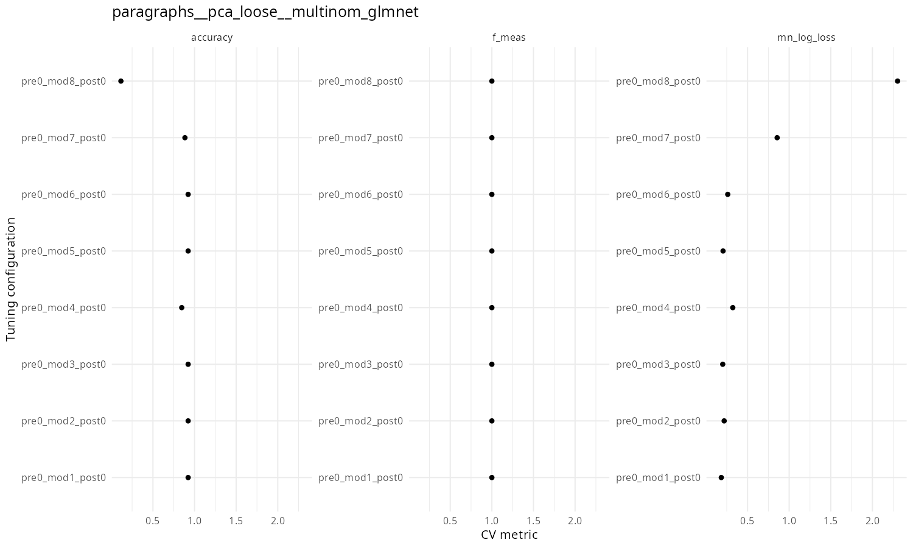
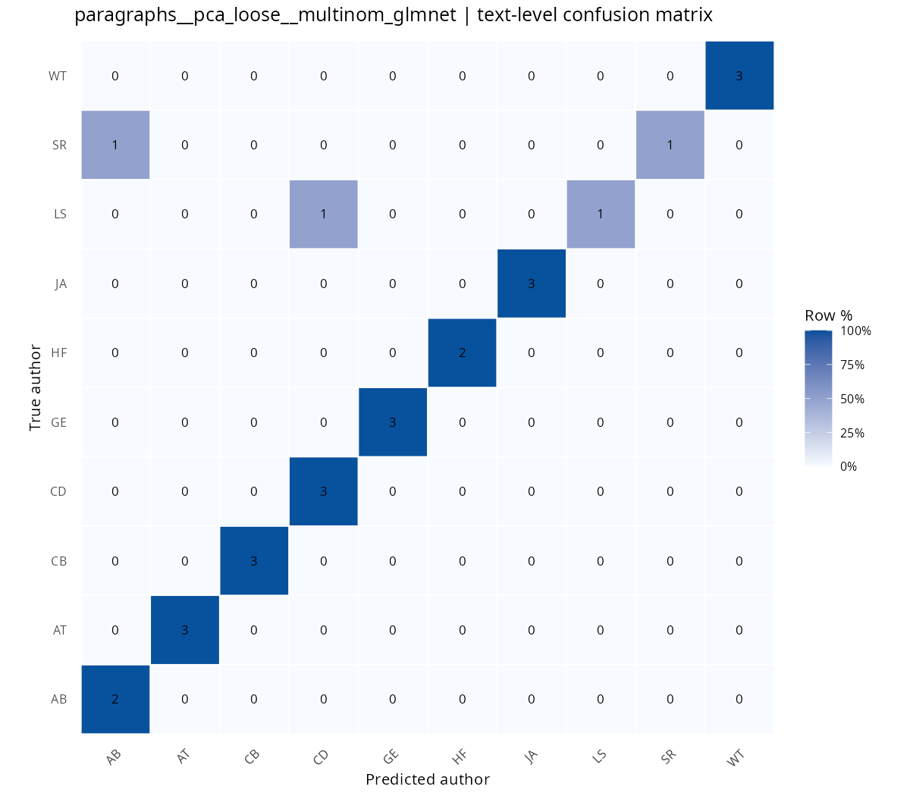
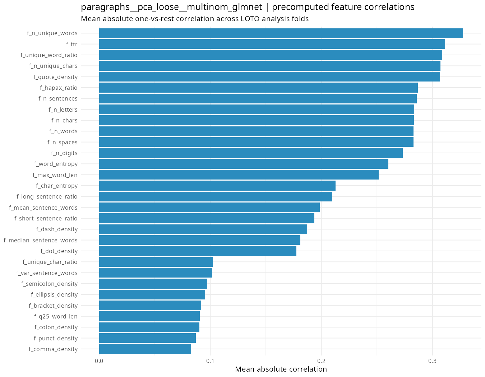

RMulticlass
Проект строит пайплайн для определения автора английского художественного текста по его фрагментам. Основная идея: текст сначала очищается и разбивается на чанки, затем для каждого чанка строятся признаки, модели обучаются в схеме leave-one-text-out, а предсказания чанков агрегируются обратно в предсказание целого текста.
Данные
Исходные тексты лежат в british_fiction, метаданные - в metadata.csv. В метаданных хранятся идентификаторы текстов, авторов, названия и имена файлов.
В пайплайн попадают только авторы, у которых есть минимум два текста. Это нужно, чтобы можно было честно откладывать один текст автора в тестовый фолд, а остальные оставлять в обучении. Иначе мы будем предсказывать не автора, а конкретный текст, будет утечка данных, что неприятно.
Предобработка
На первом этапе тексты читаются из british_fiction, очищаются и сохраняются в british_fiction_prepared с теми же именами.
Очистка делает следующее:
- убирает технические заголовки и хвосты Project Gutenberg;
- нормализует кавычки, тире и пробелы;
- удаляет числа;
- делает лемматизацию.
Сюда вынесена очистка, она применяется к конкретным текстам, не фиттится ни на чём, соответственно, утечки нет.
Чанкование
После подготовки тексты разбиваются на чанки. Все возможные схемы описаны в config.R, но реально используемые схемы задаются отдельно:
enabled_chunk_names = c(
"paragraphs",
"ten_parts"
)
Сейчас считаются только:
paragraphs- разбиение по абзацам;ten_parts- каждый текст делится на 10 примерно равных частей.
Для каждого набора чанков создается отдельная таблица в chunk_tables/chunks.
Почему так? Потому что пипелин очень долго считается и я не успел всё прогнать. Ради интереса оставлю после сдачи дз.
Произведён техничесчкий разведывательный анализ данных - результаты лежат в chunk_tables/debug
Признаки
Для каждого чанка заранее считаются признаки f_*. Они не фиттятся, поэтому спокойно считаем вне CV (LOTO).
Среди них:
- длина чанка в символах, словах, предложениях и абзацах;
- число уникальных слов и символов;
- длины слова;
- признаки длины предложений;
- лексическое разнообразия, энтропия, как много стоп-слов;
- плотность пунктуации, кавычек, тире и других символов;
- доля заглавных букв.
Эти признаки сохраняются прямо в CSV с чанками.
Текстовые признаки
Внутри рецептов дополнительно строятся текстовые признаки:
- триграммы слов;
- триграммы символов;
- фичи слов и стоп-слов.
Для признаков слов и символов используется TF-IDF. Для стопвордовых признаков используется TF.
Сейчас лимиты сделаны жесткими, чтобы ускорить подготовку:
max_word_ngram_features = 150
max_char_ngram_features = 150
max_stopword_features = 50
Отбор признаков
Сейчас используется только один вариант отбора:
pca_loose
Перед PCA все числовые признаки нормализуются. После этого остается максимум 30 PCA-компонент.
Ранее в пипелине был корреляционный отбор, но сейчас он выключен, тк опять же, не успевает отсчитать.
Балансировка и нормализация
Балансировка классов выполняется через апсемплинг внутри трейн-части каждого фолда. Тестовый текст в этот шаг не попадает.
Нормализация также выполняется внутри рецептов. Для PCA она применяется до расчета компонент.
Модели
Проверяются несколько мультиклассовых моделей:
- multinomial glmnet;
- linear SVM;
- random forest;
- XGBoost;
- MLP.
Leave-One-Text-Out
Оценка качества строится по схеме leave-one-text-out. В каждом фолде один полный текст откладывается в тест, а модель обучается на всех остальных текстах.
Это важно, потому что чанки одного текста не должны одновременно попадать и в трейн, и в тест. Иначе модель могла бы видеть похожие фрагменты того же произведения во время обучения.
Все обучаемые шаги рецептов - TF-IDF, PCA, нормализация, апсемплинг - фиттятся только на трейновой части фолда.
Подбор гиперпараметров
Для каждой внешней конфигурации запускается перебор гиперпараметров. Размер сетки задается в config.R:
grid_size = 8
Лучшая настройка гиперпараметров выбирается по mn_log_loss:
selection_metric = "mn_log_loss"
Это сделано потому, что при leave-one-text-out macro F1 внутри отдельных фолдов может вести себя нестабильно. Log loss лучше подходит для выбора модели по вероятностям классов.
Агрегация чанков в текст
Модель сначала предсказывает вероятности авторов для каждого чанка. Затем вероятности усредняются по всем чанкам одного текста. Итоговый автор текста - тот, у кого максимальная средняя вероятность.
Метрики и графики
После каждого запуска сохраняются:
- строка с метриками в
metrics/model_runs.csv; - график tuning metrics в
metrics/plots; - confusion matrix в
metrics/confusion_matrices; - график корреляций заранее посчитанных
f_*признаков вmetrics/feature_correlations.
Основная итоговая метрика для сравнения моделей - text-level macro F1. Дополнительно сохраняются text-level accuracy, chunk-level macro F1, chunk-level accuracy и CV log loss.
Воспроизводимость
В конфиге задан seed:
seed = 22052026
Он используется при запуске моделирования. При параллельном выполнении отдельные модели могут давать небольшую недетерминированность, но общий пайплайн фиксирует зерно.
Результаты
На текущий момент в metrics/model_runs.csv есть один актуальный завершенный прогон:
paragraphs__pca_loose__multinom_glmnet
Это модель для чанков по абзацам, с PCA-отбором признаков и multinomial glmnet.
Использованные признаки
Модель обучалась на 30 PCA-компонентах. Эти компоненты строились внутри каждого трейнового фолда после нормализации всех числовых признаков.
В PCA входили следующие группы признаков:
word trigrams TF-IDF- TF-IDF по словесным триграммам, максимум 150 признаков;character trigrams TF-IDF- TF-IDF по символьным триграммам, максимум 150 признаков;stopword TF- частоты служебных слов, максимум 50 признаков;- заранее посчитанные числовые признаки чанков
f_*.
Список f_* признаков:
f_n_chars- число символов;f_n_letters- число латинских букв;f_n_digits- число цифр;f_n_spaces- число пробельных символов;f_n_lines- число строк;f_n_paragraphs- число абзацев;f_n_sentences- число предложений;f_n_words- число слов;f_n_unique_words- число уникальных слов;f_n_unique_chars- число уникальных символов;f_unique_word_ratio- доля уникальных слов;f_unique_char_ratio- доля уникальных символов;f_mean_word_len- средняя длина слова;f_median_word_len- медианная длина слова;f_min_word_len- минимальная длина слова;f_max_word_len- максимальная длина слова;f_var_word_len- дисперсия длины слов;f_q25_word_len- первый квартиль длины слов;f_q75_word_len- третий квартиль длины слов;f_mean_sentence_words- среднее число слов в предложении;f_median_sentence_words- медианное число слов в предложении;f_var_sentence_words- дисперсия длины предложений;f_short_word_ratio- доля коротких слов;f_long_word_ratio- доля длинных слов;f_short_sentence_ratio- доля коротких предложений;f_long_sentence_ratio- доля длинных предложений;f_ttr- отношение числа уникальных слов к общему числу слов;f_hapax_ratio- доля слов, встретившихся один раз;f_word_entropy- энтропия распределения слов;f_char_entropy- энтропия распределения символов;f_stopword_density- доля служебных слов;f_repeated_word_ratio- доля повторов соседних слов;f_punct_density- плотность пунктуации;f_dot_density- плотность точек;f_comma_density- плотность запятых;f_colon_density- плотность двоеточий;f_semicolon_density- плотность точек с запятой;f_question_density- плотность вопросительных знаков;f_exclamation_density- плотность восклицательных знаков;f_quote_density- плотность кавычек;f_dash_density- плотность дефисов и тире;f_bracket_density- плотность скобок;f_ellipsis_density- плотность многоточий;f_uppercase_ratio- доля заглавных букв среди букв;f_non_alnum_ratio- доля небуквенно-цифровых символов.
Итоговые предикторы модели: PC1 ... PC30.
Модель и гиперпараметры
Использованная модель:
multinom_glmnet
Лучшие гиперпараметры выбирались по mn_log_loss:
penalty = 1e-10
mixture = 0.3214
best_config = pre0_mod1_post0
penalty = 1e-10 означает почти отсутствующую регуляризацию. mixture = 0.3214 задает смесь L1/L2-регуляризации в glmnet.
Метрики
Текущие метрики:
| Метрика | Значение |
|---|---|
cv_log_loss_mean |
0.184 |
cv_macro_f1_mean |
1.000 |
chunk_macro_f1 |
0.669 |
chunk_accuracy |
0.235 |
text_macro_f1 |
0.899 |
text_accuracy |
0.923 |
Такая схема оценки нормальна для этой задачи, потому что модель проверяется на полностью отложенном тексте. Чанки одного и того же текста не разлетаются между трейном и тестом, поэтому модель не видит фрагменты проверяемого произведения во время обучения.
Графики
Tuning metrics:

Confusion matrix:

Корреляции признаков:

Важность признаков
В PCA важность не считал (сложно интерпретировать), но в целом важность признаков посчитана (хотелось бы SHAP, но не успелось). Вот так считается некоторая важность фич:
- для каждого фолда берется только трейновая часть. Для каждого признака считается абсолютная корреляция с каждым автором, затем эти значения усредняются по авторам и по фолдам. На графике показаны признаки с наибольшей средней абсолютной корреляцией. По описанию выше что за фичи что значат можно понять, что число уникальных слов оч сильно коррелирует, и в общем параметры, связанные с уникальными словами и символами довольно высоко в топе + выбивается количество цитат. Это можно назвать стилистическими особенностями, какие-то особенности языка автора и стиля написания.
Но опять же это не фактическая важность фич для моделей, а просто прикидка на корреляциях.
Хотелось бы какие-нибудь pos-фичи нагенерить и на них прогнать + темы и тп, но препроцессинг и так очень долгий, это проблема.
Если нужна одна хорошая модель для a-ля продакшена, можно взять конфиг из таблицы model_runs и обучить на всех текстах, качество мы приблизительно, хоть и немного оптимистично, посичтали (нельзя сделать nested_cv, и так некоторые авторы слишком мало раз представлены).
Основное ограничение, что мы выкинули Emily Bronte, но с ней ничего было нельзя сделать - мы бы могли ток этот конкретный текст предсказывать, ничего более, это неправильно. Опять же, можно какую-нибудь бинарную классификацию запилить типа это Эмили Бронте или нет, сделать простой ансамбль, но не хватило времени.
Выводы
В целом, чанкование на абзацы и LOTO хорошо работают, мы уверены, что выделяем именно авторские особенности, а не шум. Мы берём стилистические фичи, можем довольно точно предсказывать автора по тексту.
Пока писал текст, отсчиталось следующее разбиение на чанки (на 10 равных), результаты есть в табличке model_runs и корреляции под них там же. Матрицы корреляций в той же папке где обычно. Цифры там гораздо приятнее)) Там macro accuracy 0.96, а macro f1 0.95. Как-то так, посмотрим, как досчитает, возможно, добавлю.
Код писался в том числе с использованием LLM, но пипелин взят полностью из головы, писались в основном отдельные функции и я старался их отсматривать.